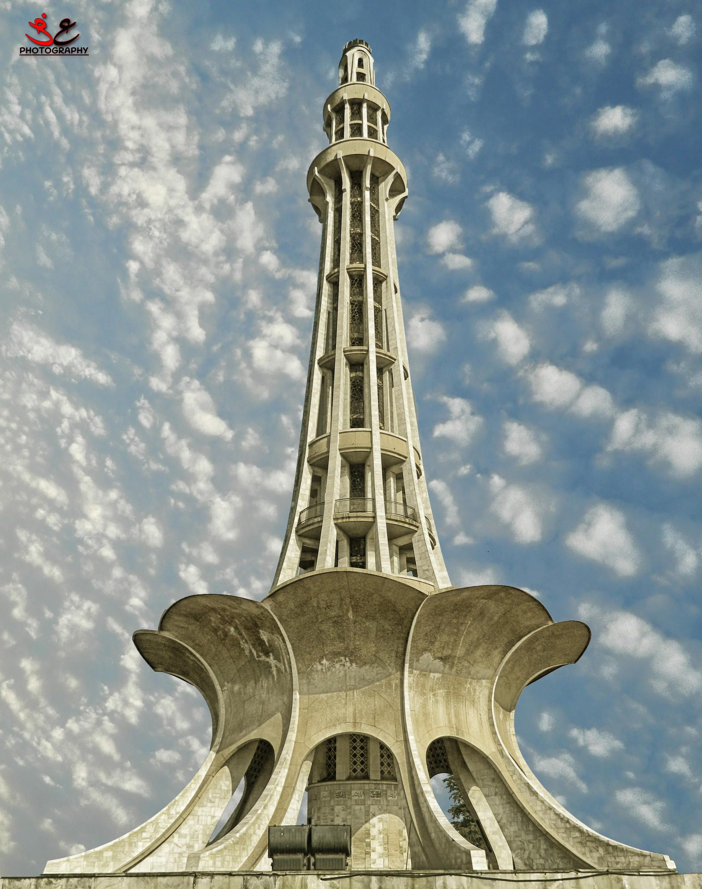

Husnain Momin
Lahore (/ləˈhɔːr/; Punjabi: لہور; pronounced [lɔ̀ːɾᵊ]; Urdu: لاہور; pronounced [lɑːˈɦɔːɾ] (About this soundlisten)) is the capital of the Pakistani province of Punjab and is the country's 2nd largest city after Karachi, as well as the 26th largest city in the world.[10] Lahore is one of Pakistan's wealthiest cities with an estimated GDP (PPP) of $84 billion as of 2019.[8][9] It is the largest city and historic cultural centre of the wider Punjab region,[11][12][13][14] and is one of Pakistan's most socially liberal,[15] progressive,[16] and cosmopolitan cities.[17]
 Source
Nadra Website